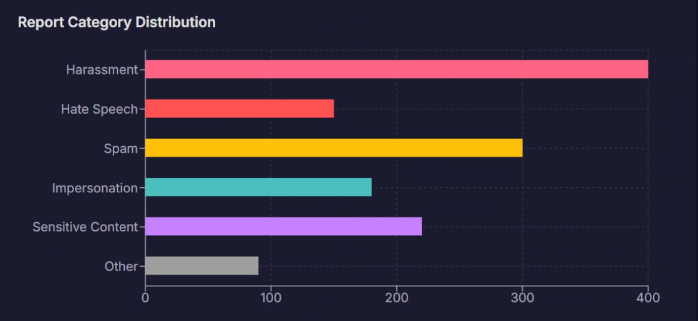

Recent Projects
Data-Driven Graduate Application System
Led a team of 6 to develop a full-stack web application featuring an AI chatbot for user support,
architected the database schema, and owned backend logic and cloud deployment.
Tech Stack: Python (Flask), MySQL, AWS, Gemini API, JavaScript
Project
Demo |
GitHub

Statistical Analysis in Esports: A Publication
Performed Exploratory Data Analysis (EDA) on a large Kaggle dataset and applied regression models
to determine the statistical significance of in-game resources on match outcomes.
Tech Stack: R (dplyr, ggplot2), Statistical Modeling, Data Visualization
Read The Publication

VRChat Trust & Safety Workbench
Developed an AI-augmented dashboard for analysts to review reports, investigate users, and
proactively find threats using VRChat-specific tools.
Tech Stack: React, TypeScript, Gemini API, Tailwind CSS
Live Demo |
GitHub
AI-Powered Content & Social Media Pipeline
Engineered an automated data pipeline to generate and deploy video content across multiple social
media platforms, orchestrating the entire workflow with cron jobs in a Linux environment.
Tech Stack: Python, REST APIs, Shell Scripting, Cron, Linux
GitHub
Repo |
Live
Example

LinkedIn Referral & Connection Bot
Developed an automation script using Selenium to streamline the job application process by
finding connections at
target companies and sending personalized referral requests.
Tech Stack: Python, Selenium, WebDriver Manager, SQLite
GitHub
Job Application Tracker & Alerter
Engineered a system that automatically scrapes job boards for application status updates and
sends a consolidated
summary digest directly to my inbox using the Gmail API.
Tech Stack: Python, Beautiful Soup, Requests, Gmail API, Cron
GitHub
My coding journey didn't start in a computer lab—it started with shrimp fried rice and sweet & sour pork.
Growing up
in my family's Chinese restaurant, I saw first-hand how much hard work went into every single day. So, I
started
tinkering.
I built simple dashboards to track our most popular dishes (spoiler: it was always General Tso's chicken)
and wrote
little scripts to help my parents get a better handle on inventory. That’s when I fell in love with
using technology
to solve real, everyday problems. It’s the same energy I bring to my Computer Science studies at GWU
today—I just
love building things that are genuinely useful.
When I'm not behind a keyboard, I'm probably exploring a new coffee shop or trying to find the best
noodle soup in
D.C. If you want to chat about tech, data, or food, feel free to reach out!
View My
Resume
Languages: Python, JavaScript, TypeScript, R, SQL, Java, C++, HTML/CSS
Frameworks & Libraries: Flask, React, Node.js, Pandas, NumPy, Scikit-learn, ggplot2,
Tailwind CSS
Databases: MySQL, PostgreSQL, MongoDB
Tools & Platforms: AWS (EC2, S3, RDS), Git, Docker, Linux, Shell Scripting, REST APIs
Get In Touch
I'm currently seeking new opportunities and would love to hear from you. Feel free to send me a message
about anything!


{kind=link}
{kind=link}
{kind=link}
{kind=link}
{kind=link}